Asynchronous JavaScript: AJAX, API and Promises
Concepts Covered
Async JavaScript(do task w/o block main thread) --> AJAX --> API (Rules to communicate) --> XMLHTTPRequest (load & Get data from server) --> Behind the scenes(Reuest URL converted into IP Ddress(DNS)-->Request send through packets (TCP)-->Response (Packets using IP) --> index HTML, CSS, JS) --> Callbacks (hell) --> Promise (object) --> Lifecycle (Pending --> Settled (fullfilled/ Rejected) --> Consuming promises (.then().catch().finally()) --> Creating Promises (new Promise(executor function(resolve, reject){} --> Promise.Any(return all but 1st priority failed one) --> Promise.race(Return 1st fullfilled/reject) -->Promise.AllSettled(Return all) --> Promise.Any( Return any Settled Promises) --> Async/Await (Readable way to consume promise) --> Event Loop (Handle async operations (Timers--> Web APIs --> Callback Queue) (Promises --> Microtask Queue) --> Call Stack)
Asynchronous JavaScript
- Asynchronous JavaScript allows us to perform tasks without blocking the main thread, enabling smoother user experiences and better performance.
- It is essential for handling tasks like fetching data from APIs, timers, and user interactions without freezing the UI.
-
Below are asynchronous functions:
- setTimeout()
- setInterval()
- img.src (image loading)
- fetch()
- XMLHttpRequest
-
Below are not asynchronous functions:
- addEventListener()
- callback functions
- console.log()
- Math.random()
- Array.prototype.map()
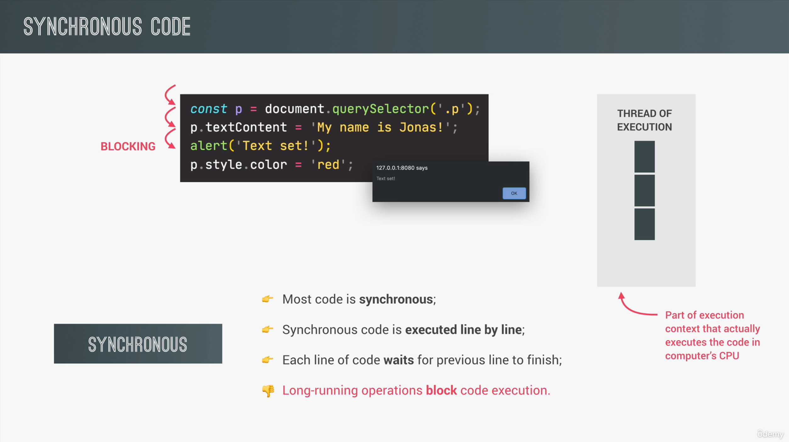
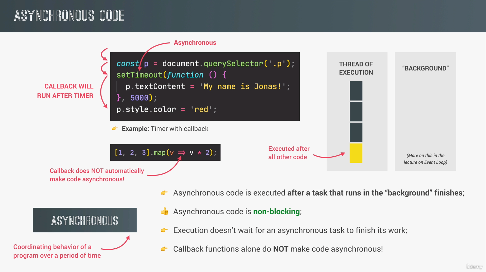
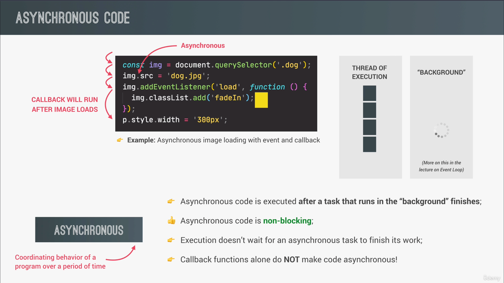

AJAX
- AJAX stands for Asynchronous JavaScript and XML. It is a technique for creating fast and dynamic web pages by allowing web pages to update asynchronously by exchanging small amounts of data with the server behind the scenes.
- This means that it is possible to update parts of a web page, without reloading the whole page.
- AJAX is not a programming language but a set of web development techniques using many web technologies on the client side to create asynchronous web applications.
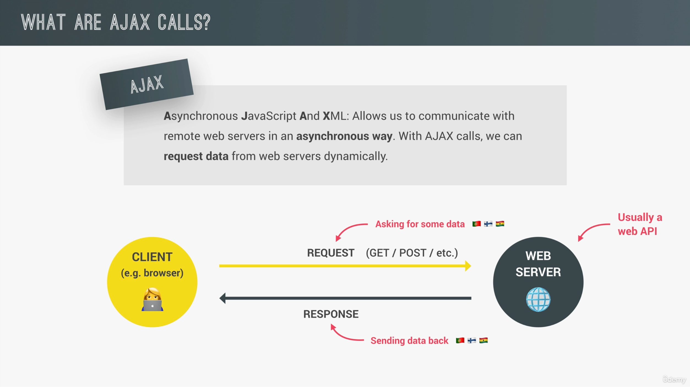
API
- API stands for Application Programming Interface. It is a set of rules and protocols for building and interacting with software applications. An API defines how different software components should interact with each other, allowing them to communicate and share data and functionality.
- APIs are used to enable the integration of different software systems, allowing them to work together and share data and functionality. They are commonly used in web development to allow different applications to communicate with each other, such as a web application communicating with a server or a mobile app communicating with a backend service.

How XMLHTTPRequest Works
- The XMLHttpRequest object is used to interact with servers. It can be used to retrieve data from a URL without having to do a full page refresh. This makes it possible to update parts of a web page, without reloading the whole page.
- The XMLHttpRequest object can be used to send data to a server and receive data from a server asynchronously, without interfering with the display and behavior of the existing page.
const request = new XMLHttpRequest();
request.open("GET","https://restcountries.com/v3.1/name/india");
request.send();
request.addEventListener("load",function(){ //Once request is loaded, this function will be called
const [data] = JSON.parse(this.responseText);
//Similar to const data = JSON.parse(this.responseText)[0];
console.log(data);
})
Display Country Details using XMLHttpRequest
Behind the scenes on when we access server
- DNS: When we enter a URL in the browser, the first step is to resolve the domain name to an IP address using the Domain Name System (DNS). This allows the browser to know where to send the request. The browser sends a DNS query to a DNS server, which responds with the IP address associated with the domain name.
- HTTP Request: Once the browser has the IP address, it sends an HTTP request to the server. This request includes information such as the method (GET, POST, etc.), headers, and any data that needs to be sent to the server.
- HTTP Response: The server processes the request and sends back an HTTP response. The response contains the data that we requested, which can be in various formats such as HTML, JSON, XML, etc.
- Rendering: The browser then takes the response and renders it on the screen, allowing us to see the content that we requested. This process happens asynchronously, meaning that while the browser is waiting for the server to respond, it can still perform other tasks and remain responsive to user interactions.
- TCP/IP: The browser establishes a connection to the server using the Transmission Control Protocol (TCP) and the Internet Protocol (IP). This ensures reliable data transfer between the client and the server.
- SSL/TLS: If the website uses HTTPS, the browser and server will establish a secure connection using SSL/TLS protocols. This ensures that the data transmitted between the client and server is encrypted and secure.
- HTTP vs HTTPS: If the website uses HTTP, the data transmitted between the client and server is not encrypted, which can be a security risk. HTTPS provides an added layer of security by encrypting the data, making it more difficult for attackers to intercept and access sensitive information.
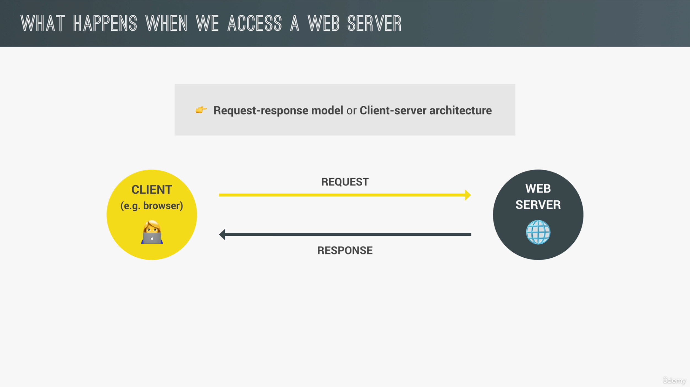
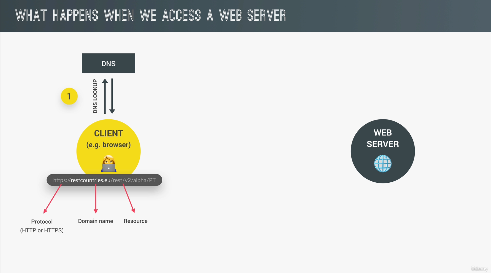
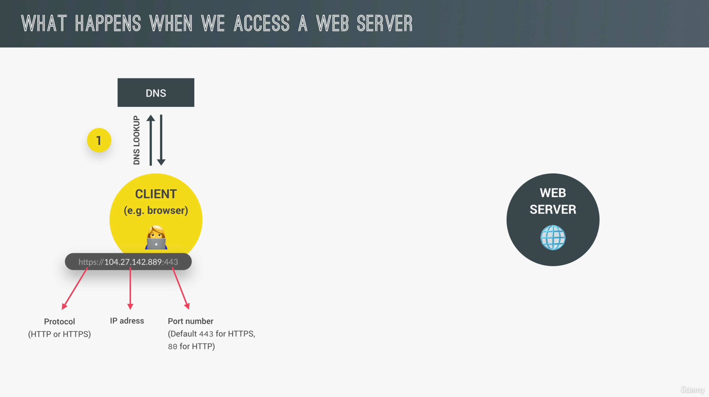
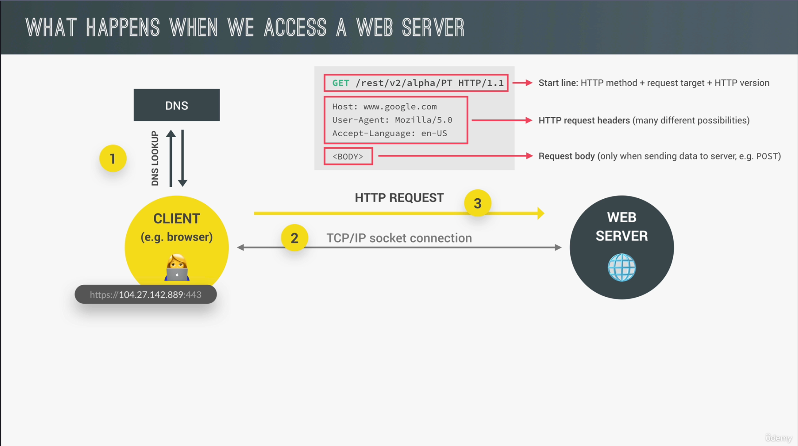
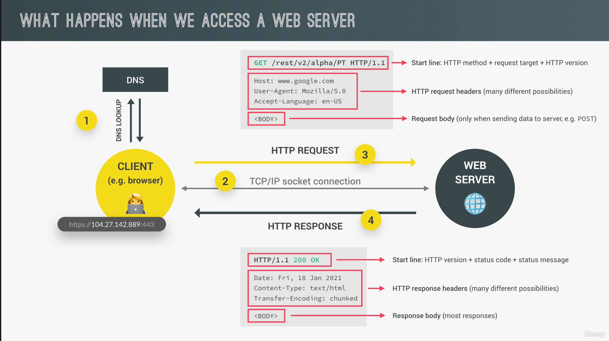
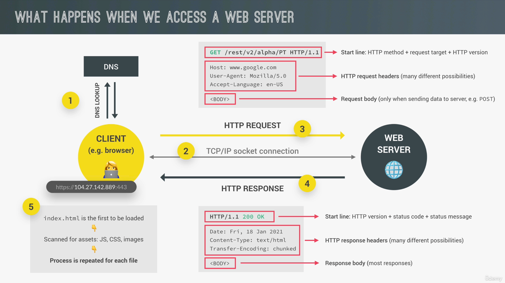
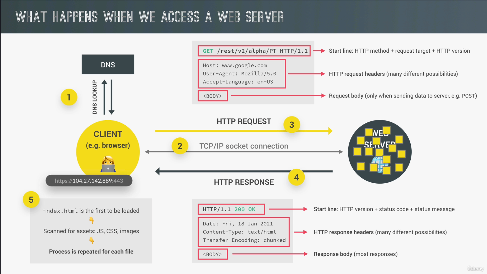

Callback Hell
- Callback Hell refers to a situation where we have multiple nested callbacks, making the code difficult to read and maintain. It often occurs when we have asynchronous operations that depend on the results of previous operations, leading to deeply nested code structures.
- This can make the code hard to understand and debug, as it becomes difficult to follow the flow of execution and manage error handling.
- To avoid callback hell, we can use techniques such as Promises or async/await, which allow us to write asynchronous code in a more readable and maintainable way.
setTimeout(() => {
console.log("1 second passed");
setTimeout(() => {
console.log("2 seconds passed");
setTimeout(() => {
console.log("3 seconds passed");
setTimeout(() => {
console.log("4 seconds passed");
}, 1000);
}, 1000);
}, 1000);
}, 1000);
Display Country and Neighbour using Callback Hell
Promises
- A Promise is an object that represents the eventual completion (or failure) of an asynchronous operation and its resulting value. It allows us to write asynchronous code in a more synchronous and readable manner.
- Promises avoids callback hell, event handlers, callback functions
- A Promise can be in one of three states: pending, fulfilled, or rejected.
- Promise Lifecycle: When a Promise is created, it is in the pending state. It can then either be fulfilled with a value or rejected with a reason (error).

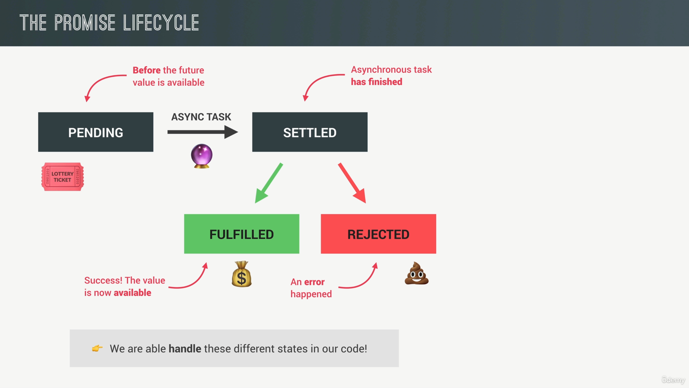

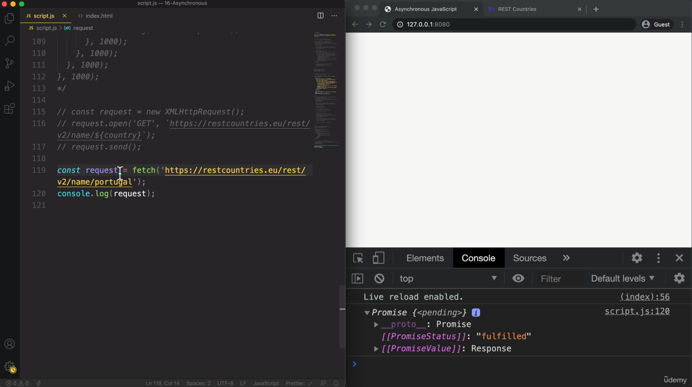
Consuming Promises
- Consuming Promises involves using the .then() and .catch() methods to handle the fulfillment or rejection of a Promise. The .then() method is used to specify what should happen when the Promise is fulfilled, while the .catch() method is used to handle any errors that may occur during the asynchronous operation.
- When consuming Promises, we can chain multiple .then() calls together to perform a series of asynchronous operations in a more readable way. This allows us to avoid callback hell and write cleaner code.
- The Fetch API is commonly used to consume Promises when making network requests. It returns a Promise that resolves to the Response object representing the response to the request.
fetch("https://restcountries.com/v3.1/name/india")
.then(response => response.json())
.then(data => console.log(data));
// response contains readablestream, headers, status, etc.
//We need to call response.json() to get the actual data in JSON format.
//response.json() also returns a Promise.
Display Country Details using Fetch & Promises
Chaining Promises
- Chaining Promises allows us to perform a sequence of asynchronous operations in a more readable and maintainable way. We can chain multiple .then() calls together, where each .then() returns a new Promise that resolves to the result of the previous .then() call.
- This allows us to avoid callback hell and write cleaner code when dealing with multiple asynchronous operations that depend on each other.
- When chaining Promises, we can also use the .catch() method at the end of the chain to handle any errors that may occur during any of the asynchronous operations in the chain.
fetch("https://restcountries.com/v3.1/name/india")
.then(response => response.json())
.then(data => {
console.log(data);
const neighbour = data[0].borders?.[0];
if (!neighbour) throw new Error("No neighbour found!");
return fetch(`https://restcountries.com/v3.1/alpha/${neighbour}`);
})
.then(response => response.json())
.then(data => console.log(data));
Display Country Details using Fetch & Chain of Promise methods
Handling Errors in Promises (Catch and throw new Error())
- Handling errors in Promises is crucial to ensure that our application can gracefully handle any issues that may arise during asynchronous operations.
- We can use the .catch() method to handle any errors (e.g., network issues, invalid responses, user manually entering incorrect data) that may occur during the execution of a Promise chain.
- Default: The .catch() method will catch any errors that occur in any of the preceding .then() calls and allow us to handle them appropriately, such as by logging the error or displaying a user-friendly message.
- Throwing new Error: We can also throw new errors within our .then() calls to create custom error messages or to handle specific error conditions. When we throw a new error, it will be caught by the nearest .catch() method in the Promise chain, allowing us to handle it accordingly.
const getCountryDataWithErrorHandling = function (country) {
fetch(`https://restcountries.com/v3.1/name/${country}`)
.then(response => response.json())
.then(data =>
renderHTML(data[0], ',', document.querySelector('.countries--4')),
)
.catch(err => console.error(`${err} 💥💥💥`))
.finally(() => (document.querySelector('.countries--4').style.opacity = 1));
};
Coding Challenge #1
- In this challenge, you will get country name using latitude and longitude cordinates.
- You will use the geocoding API to get the country name from the coordinates, and then use the country API to get the details of the country and its neighbour (if it exists).
- Pass the country name to the renderHTML function to display the country details on the page. You can use the same function that you created in previous sections to render the country details.
Behind the Scenes of Asynchronous JavaScript
- The JavaScript runtime environment is single-threaded, meaning that it can only execute one piece of code at a time. However, it uses an event loop and a callback queue to handle asynchronous operations.
- Runtime environment consists of the call stack, Web APIs, and the callback queue.
- Callback queue is a queue of callback functions that are waiting to be executed.
- Call stack is a stack data structure that keeps track of function calls.
- Web APIs are browser-provided APIs that handle asynchronous operations. Eg: XMLHttpRequest, Fetch API, Timers, DOM API
- Event loop is a mechanism that continuously checks the call stack and the callback queue.
- When an asynchronous function is called, It executed in Web API environment. Once it is complete, the callback function is added to the callback queue.
- But in promise, the callback is added to the microtask queue instead of the callback queue, which has higher priority and is executed before the callback queue.
- When the call stack is empty, the event loop pushes the first callback from the callback queue onto the call stack for execution.
- This allows asynchronous operations to be handled without blocking the main thread, enabling a responsive user experience.
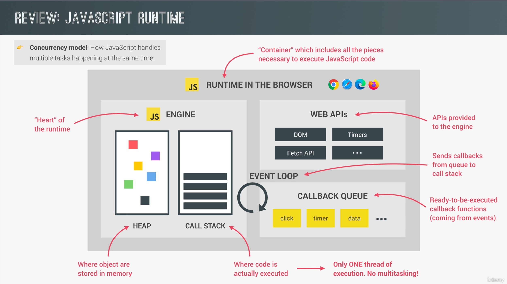
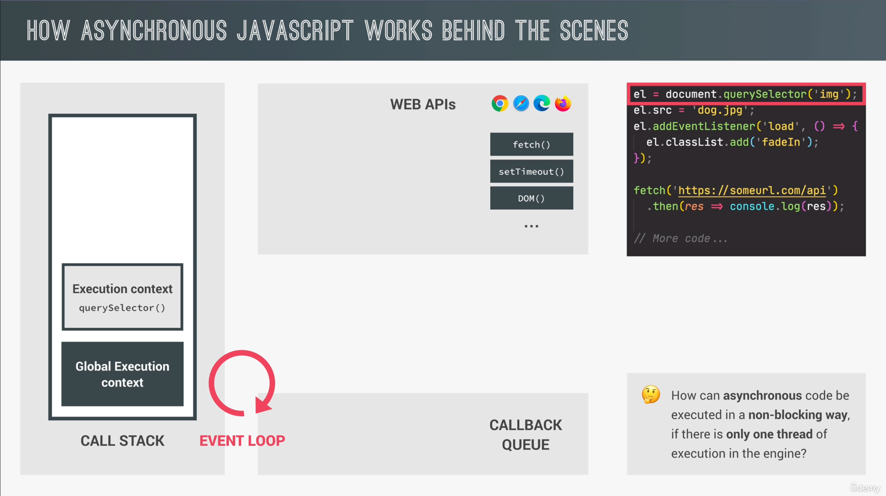
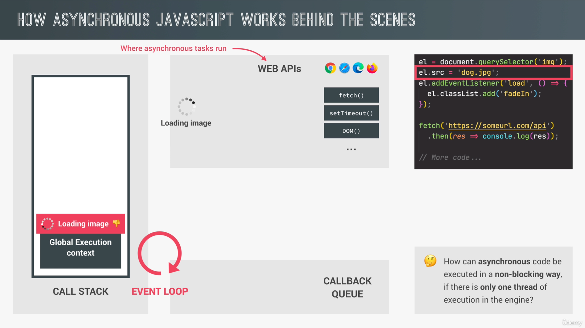
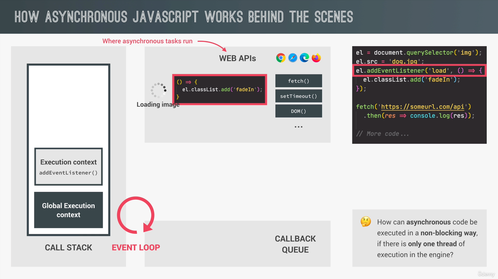
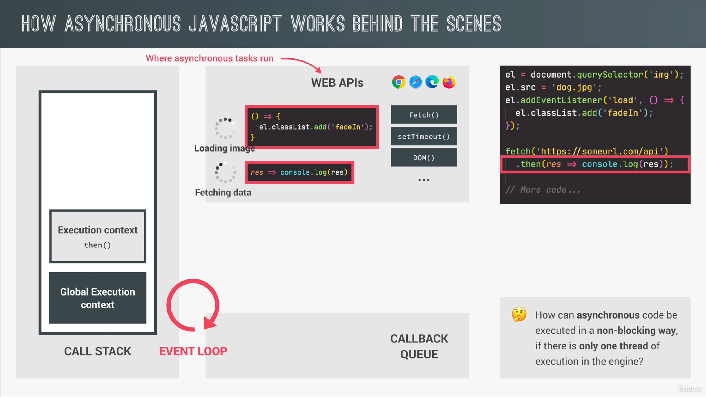


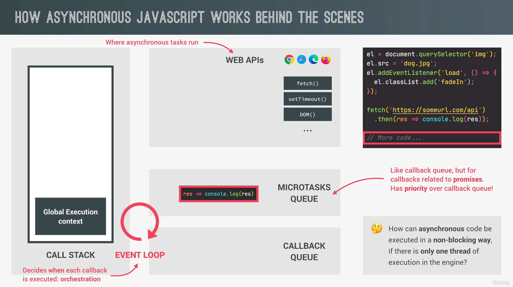

Event Loop
- The event loop is a fundamental concept in JavaScript that allows for asynchronous programming. It is responsible for managing the execution of code, handling events, and ensuring that the main thread remains responsive.
- The event loop continuously checks the call stack and the callback queue. If the call stack is empty, it takes the first callback from the callback queue and pushes it onto the call stack for execution.
- This mechanism allows JavaScript to handle asynchronous operations without blocking the main thread, enabling a responsive user experience. It ensures that even when there are long-running tasks or network requests, the user interface remains interactive and does not freeze.
console.log('Test start');
// Execute 1
setTimeout(() => console.log('0 sec timer'), 0);
//Execute 5 after 0 milliseconds,
//but it is in callback queue and will be executed after call stack and microstackis empty.
Promise.resolve('Resolved Promise 1').then(res => console.log(res));
//Execute 3 becuase of microtask queue higher priority than callback queue
Promise.resolve('Resolved Promise 2').then(res => {
for (let i = 0; i < 100000; i++) {} // Simulate a long-running task
console.log(res);
// Execute 4 after the long-running task is complete
});
console.log('Test end');
// Execute 2
Building a Simple Promise
- Building a simple Promise involves creating a new Promise object and defining the executor function that contains the asynchronous operation. The executor function takes two parameters: resolve and reject, which are used to indicate the success or failure of the asynchronous operation.
- Inside the executor function, we can perform our asynchronous task, and based on the outcome, we can call resolve() to indicate a successful operation or reject() to indicate an error or failure.
- Once the Promise is created, we can consume it using .then() and .catch() methods to handle the fulfillment or rejection of the Promise.
const lotteryPromise = new Promise(
// Executor function that contains the asynchronous operation
function (resolve, reject) {
console.log("Lottery draw is happening...");
setTimeout(function () {
if (Math.random() >= 0.5) {
// resolve() is called when the asynchronous operation is successful
resolve("You win 💰");
// reject() is called when the asynchronous operation fails
reject(new Error("You lost your money 💩"));
}
}, 2000);
}
);
lotteryPromise
.then(res => console.log(res))// Handle the resolve response of the Promise
.catch(err => console.error(err)); // Handle the reject response of the Promise
.
Promisifying Geolocation API
Coding Challenge #2
Consuming Promises with Async/Await
- Consuming Promises with async/await allows us to write asynchronous code in a more synchronous and readable manner. The async keyword is used to declare an asynchronous function, while the await keyword is used to pause the execution of the function until a Promise is resolved or rejected.
- When we use await, it waits for the Promise to resolve and returns the resolved value. If the Promise is rejected, it throws an error that can be caught using a try/catch block.
- Using async/await can help us avoid callback hell and make our code easier to read and maintain when dealing with multiple asynchronous operations.
const getCountryDataAsyncAwait = async function (country) {
try {
const response = await fetch(`https://restcountries.com/v3.1/name/${country}`);
const data = await response.json();
renderHTML(data[0], ',', document.querySelector('.countries--5'));
} catch (err) {
console.error(`${err} 💥💥💥`);
} finally {
document.querySelector('.countries--5').style.opacity = 1;
}
};
Promise All
- Promise.all is a method that takes an array of Promises and returns a new Promise that resolves when all of the input Promises have resolved, or rejects if any of the input Promises reject.
- When the returned Promise resolves, it resolves to an array of the resolved values from the input Promises, in the same order as the input Promises.
- If any of the input Promises reject, the returned Promise will reject with the reason of the first rejected Promise.
- Promise.all is useful for performing multiple asynchronous operations in parallel and waiting for all of them to complete before proceeding with the next steps in our code.
- It allows us to handle multiple Promises together and simplifies the management of asynchronous operations that depend on each other.
const get3Countries = async function (c1, c2, c3) {
try {
const data = await Promise.all([
fetch(`https://restcountries.com/v3.1/name/${c1}`).then(res => res.json()),
fetch(`https://restcountries.com/v3.1/name/${c2}`).then(res => res.json()),
fetch(`https://restcountries.com/v3.1/name/${c3}`).then(res => res.json()),
]);
console.log(data);
} catch (err) {
console.error(err);
}
};

Promise Race
- Promise.race is a method that takes an array of Promises and returns a new Promise that resolves or rejects as soon as one of the input Promises resolves or rejects.
- The returned Promise will have the same value or reason as the first input Promise to settle (resolve or reject).
- Promise.race is useful for scenarios where we want to get the result of the fastest asynchronous operation among multiple operations.
Promise.race([
fetch(`https://restcountries.com/v3.1/name/italy`),
fetch(`https://restcountries.com/v3.1/name/egypt`),
fetch(`https://restcountries.com/v3.1/name/mexico`),
])
.then(res => res.json())
.then(data => console.log(data))
.catch(err => console.error(err));
// The above code will return the data of the country whose API responds first among Italy, Egypt, and Mexico.
Promise All Settled
- Promise.allSettled is a method that takes an array of Promises and returns a new Promise that resolves when all of the input Promises have settled (either resolved or rejected).
- The returned Promise resolves to an array of objects, each representing the outcome of each input Promise. Each object has a status property that indicates whether the Promise was fulfilled or rejected, and a value or reason property that contains the resolved value or rejection reason.
- Promise.allSettled is useful for scenarios where we want to wait for all asynchronous operations to complete, regardless of whether they succeed or fail, and handle their outcomes accordingly.
Promise.allSettled([
fetch(`https://restcountries.com/v3.1/name/italy`),
fetch(`https://restcountries.com/v3.1/name/egypt`),
fetch(`https://restcountries.com/v3.1/name/mexic`), // Incorrect country name to demonstrate rejection
])
.then(results => {
results.forEach((result, i) => {
if (result.status === 'fulfilled') {
console.log(`Promise ${i + 1} fulfilled with value:`, result.value);
} else {
console.log(`Promise ${i + 1} rejected with reason:`, result.reason);
}
});
})
.catch(err => console.error(err));
// The above code will log the outcome of each Promise, whether it was fulfilled or rejected,
//along with the corresponding value or reason.
Promise Any
- Promise.any is a method that takes an array of Promises and returns a new Promise that resolves as soon as any of the input Promises resolves, or rejects if all of the input Promises reject.
- The returned Promise will resolve with the value of the first input Promise to resolve, or reject with an AggregateError if all input Promises reject.
- Promise.any is useful for scenarios where we want to get the result of the first successful asynchronous operation among multiple operations, while ignoring any failures.
Promise.any([
fetch(`https://restcountries.com/v3.1/name/italy`),
fetch(`https://restcountries.com/v3.1/name/egypt`),
fetch(`https://restcountries.com/v3.1/name/mexico`),
])
.then(res => res.json())
// The above code will return the data of the country whose API responds
// first among Italy, Egypt, and Mexico, while ignoring any rejections.
.then(data => console.log(data))
.catch(err => console.error(err));
Difference between Promise.all, Promise.race, Promise.settled, Promise.any
- Promise.all waits for all Promises to resolve or any to reject, and returns an array of results or the first rejection reason.
- Promise.race waits for the first Promise to settle (resolve or reject) and returns its value or reason.
- Promise.allSettled waits for all Promises to settle and returns an array of objects describing the outcome of each Promise.
- Promise.any waits for the first Promise to resolve and returns its value, or rejects if all Promises reject.